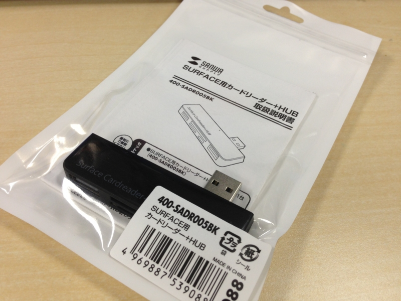
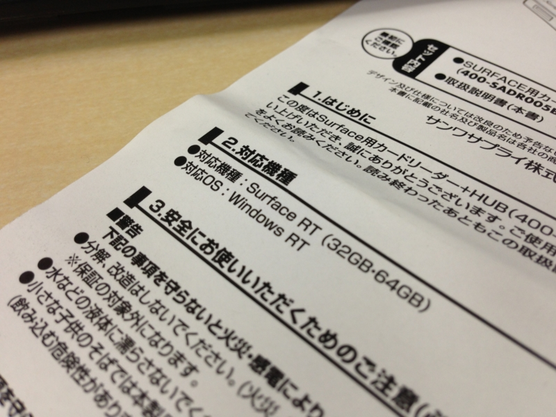
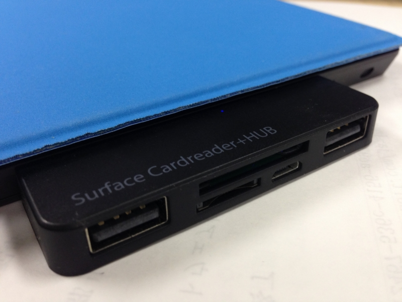

Surface RT 専用 USB ハブ！？ サンワサプライの侠気を買ったった
公開日：

サンワサプライ株式会社は、日本マイクロソフト「Surface」専用のUSB 2.0 Hub付きSDカードリーダ「400-SADR005BK」を直販サイトサンワダイレクトで発売した。価格は2,980円。
おー、Surface にも専用のサードパーティー製グッズがでるようになったのか。これでまた iPad に一歩近づいたな！

対応デバイスは Surface RT のみ。サンワサプライさん、カッコええわ。こんなに売れていない端末専用のデバイスを作って、売りだすなんて。並々ならぬ侠気＜おとこぎ＞を感じる。正直、自分にとってそれほど必要なデバイスではなかったのだけど、その侠気を買った！ Microsoft さんもサンワサプライさんに足向けて寝られへんな。
一応 Surface Pro でも使えるけれど、ボリュームボタンと干渉するのでイマイチ。それほど気にはならないと思うけれど。あと、
Surface ProはUSB 3.0ポートを装備するが、本製品を用いるとUSB 2.0に制限される
なのだそうだ。ちょっと残念感がある。

さてさて、実際に付けてみると――マジでピッタリ！ 斜めにカットされたエッジへ吸い付くように装着される（←言い過ぎ！）。個人的には、USB のコネクタが収納できると、鞄の中に入れておくときに便利なんだけどなぁ、と感じたが――まぁ、それは注文が過ぎるか。

サンワダイレクト Surface専用カードリーダー USBハブ2ポート SurfaceRT SurfacePro 対応 400-SADR005BK
- 出版社/メーカー: サンワダイレクト
- メディア: エレクトロニクス
- この商品を含むブログを見る